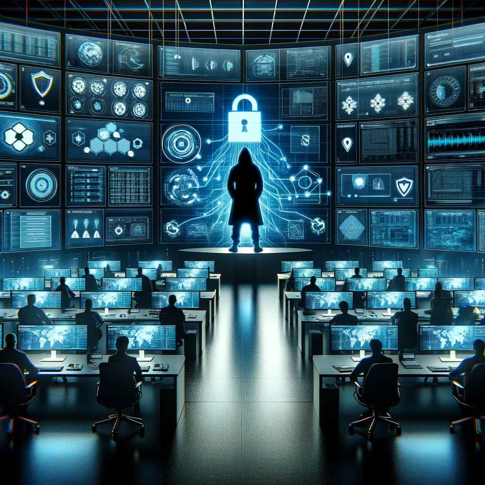
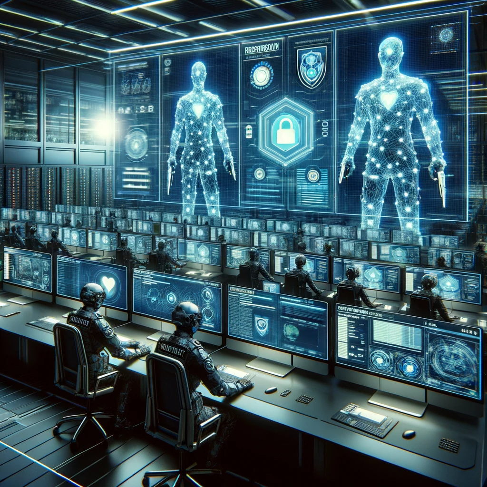

In today's digital landscape, organizations face an ever-increasing threat from cyber attacks. The Rockstar Cyber Attack of 2024, a sophisticated and devastating breach, has brought cybersecurity to the forefront of every organization's priority list.
As businesses strive to protect their digital assets, it is crucial to implement robust defense mechanisms. This guide dives into the strategies and best practices to safeguard your organization against this notorious attack and preserve your valuable digital assets.
To effectively defend against the Rockstar Cyber Attack, organizations must understand the current threat landscape. Cybercriminals are becoming more sophisticated, using advanced techniques such as social engineering and zero-day vulnerabilities.
Understanding the tactics used in a Rockstar Cyber Attack is crucial for organizations to build an effective defense. These attacks often involve infiltration through phishing emails or employee negligence, exploiting vulnerabilities to gain unauthorized access.
To effectively protect your organization's digital assets, you must assess and understand its vulnerabilities.
Building a robust cybersecurity framework is crucial in defending against the Rockstar Cyber Attack of 2024.
Educating employees on cybersecurity best practices is crucial in protecting your organization's digital assets.
In the event of a cyber attack, having a well-defined incident response plan is crucial.
Encryption is a key component of protecting your organization's digital assets.
To effectively defend against the Rockstar Cyber Attack, proactive monitoring and regular updates are crucial.
The Rockstar Cyber Attack of 2024 serves as a stark reminder of the importance of cybersecurity in the modern digital era.